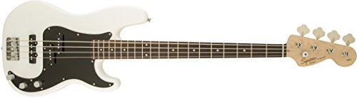
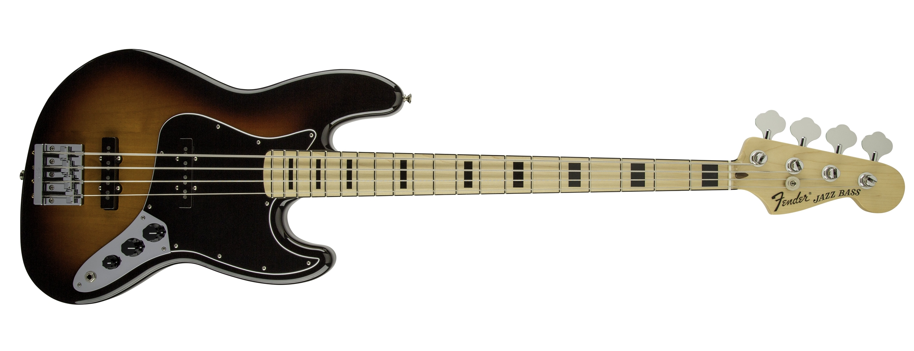
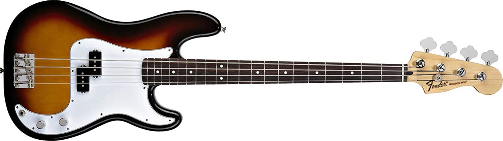

En construcción
| Modelos Fender | |||
|---|---|---|---|
| Imagen |  |  |  |
| Marca | Fender | Fender | Fender |
| Color | Blanco | Marron | Amarillo |
| Modelo | Fender Bajo Squier Affinity Series™ Precision Bass® PJ, Rosewood Finger | Fender Geddy Lee Jazz Bass | Fender 0146100532 estándar Precision Bass Diapasón de Palisandro), Sunburst |
| Precio | EUR129,10 | No disponible | EUR 719,00 |
| https://www.bajoelectrico.net/fender/ | |||
El bajo eléctrico, llamado sencillamente bajo,1 es un instrumento musical melódico de la familia de los cordófonos, similar en apariencia y construcción a la guitarra eléctrica, pero con un cuerpo de mayores dimensiones, un mástil de mayor longitud y escala y, normalmente, cuatro cuerdas afinadas según la afinación estándar del contrabajo, su antecesor.23 Salió de la necesidad de producir los sonidos rítmicos graves con un instrumento más compacto, barato, fácil de producir y transportar que el contrabajo, que era el instrumento encargado de esta tarea en los años 40 y 50. Para esto, el bajo adoptó una forma bastante similar a la de la guitarra, aunque luego esto provocó que algunas personas confundieran estos dos instrumentos. Con el objetivo de evitar un uso excesivo de líneas adicionales en el pentagrama, el bajo eléctrico ―al igual que el contrabajo― suena una octava más grave que las notas representadas en notación musical. Como la guitarra eléctrica, el bajo eléctrico necesita ser conectado a un amplificador para emitir sonidos. Desde la década de 1950, el bajo eléctrico ha reemplazado progresivamente al contrabajo en la música popular como el instrumento de la sección rítmica que se ocupa de las líneas de bajo.4Aunque estas varían notablemente en función del estilo de música, el bajista cumple una función similar con independencia del estilo de que se trate: establecer el marco armónico y marcar el tiempo o «pulso rítmico» .5El bajo eléctrico se usa como instrumento de acompañamiento o como instrumento solista en prácticamente todos los estilos de música popular del mundo, incluyendo el blues, el flamenco, el jazz, el pop, el punk, el reggae y el rock.6
WEBMUSICA.COM